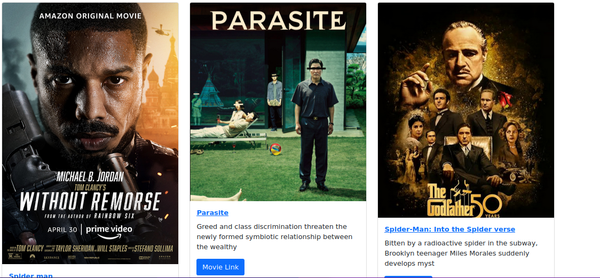
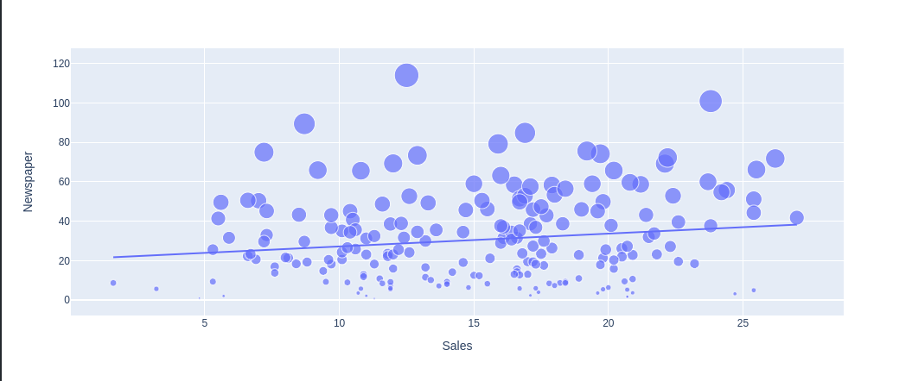
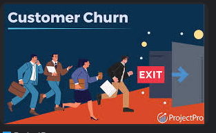

Django-based web application designed for movie enthusiasts to search, review,
and track movies they’ve watched. Users can sign up, search for movies by title,
add detailed reviews, and indicate whether they would like to watch the movie again.
This application provides a simple, intuitive interface for users to manage their movie experiences and share their opinions with others.

In this project, I trained a model using random forest classifier on customer's dataset to predict how likely a customer would repay his/her i.e likely
loan defaulters to repay their loans.
In this project, I trained a Movie Recommendation System that can recommend
movies to users based on similarity between
the movie that a user input into the system.
In this project, I trained a ML model that is capable of recognizing positive and negative comments in
in a given text. The dataset I used is from Amazon Product Reviews from their customers.

In this project, I trained a ML(CNN) model that is capable distinguishing between whether an image is a dog or cat

In this project, I used Deep Learning algorithm to train a neural network that is capable
of predicting whether an Bank Customer is likely to Churn or not.
In this project, I used Computer Vision library such as OpenCv, YOLO and Cascade to
train a ML model that is capable of detecting cars number plates